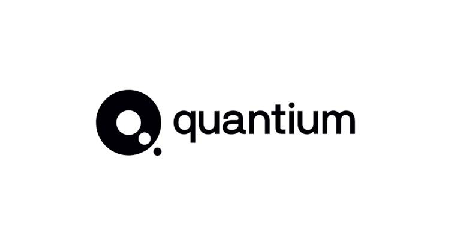

Python
Proficient Proficient in Python for data analysis, machine learning, and NLP — including Retrieval-Augmented Generation systems — with hands-on experience using NumPy, Pandas, Scikit-Learn, PyTorch, and TensorFlow.
DATA SCIENTIST — MACHINE LEARNING, NLP & GENERATIVE AI
I build models and systems that turn messy, real-world data into decisions someone can actually act on from a Retrieval-Augmented Generation chatbot built on Shakespeare's full text, to a fraud-detection model on 500,000+ healthcare claims that improved precision-recall by 13%. My background is a Master of Mathematical Sciences (Data Science) from the University of Wollongong and a Bachelor of Computational Finance, and my toolkit spans Python, R, SQL, and machine learning, but what I care about most is whether a model's output can actually be trusted before someone relies on it. I'm currently looking for a Data Scientist role where I can bring that mindset to real business problems.
A short video introduction showcasing my skills, experience, and professional mindset.
Proficient Proficient in Python for data analysis, machine learning, and NLP — including Retrieval-Augmented Generation systems — with hands-on experience using NumPy, Pandas, Scikit-Learn, PyTorch, and TensorFlow.
Used daily to query and analyse sales and performance data — joins, aggregations, data cleaning, and reporting for business decision-making.
Built and validated classification and regression models — including CatBoost and Random Forest — with a focus on testing reliability through cross-validation and hypothesis testing, not just accuracy.
Applied for statistical modelling and predictive analysis, including Lasso Regression and CART, alongside Python in cross-language projects.
Created interactive dashboards and data storytelling visuals to communicate findings to non-technical stakeholders.
Built a Retrieval-Augmented Generation (RAG) chatbot using FAISS indexing and transformer-based language models — grounding responses in real retrieved text rather than model memory.
Professional certifications and completed courses that strengthen my technical and analytical skills.
Completed professional virtual training covering data cleaning, analysis, visualisation, and SQL — simulating real consulting-style client analytics work.

Applied R programming skills to analyse a retail transaction dataset for the Quantium Virtual Internship — identifying the most suitable location for a new store and evaluating chip sales trends to uncover the best-performing products and customer segments.
Built a Retrieval-Augmented Generation (RAG) chatbot that answers natural-language questions about Shakespeare's plays and poems — grounded entirely in real retrieved text, not the model's memory. User queries are converted into semantic embeddings and matched against a FAISS vector index built from the full Shakespeare corpus, retrieving the most relevant passages before a transformer-based model generates a response. A Streamlit interface lets users explore themes like love, ambition, and betrayal through plain-language search. I manually tested a range of thematic and specific queries to confirm responses stayed grounded in retrieved text rather than drifting into generic or invented content, iterating on retrieval and prompt design where results were weak.
Analysed a healthcare claims dataset of over 500,000 records to detect patterns distinguishing legitimate from potentially fraudulent claims. Built and compared multiple classification models — including CatBoost with native categorical feature handling — achieving a 13% improvement in precision-recall performance over baseline approaches. Validated results through k-fold cross-validation and paired t-tests before drawing conclusions, and produced technical documentation summarising findings for both technical and business audiences.